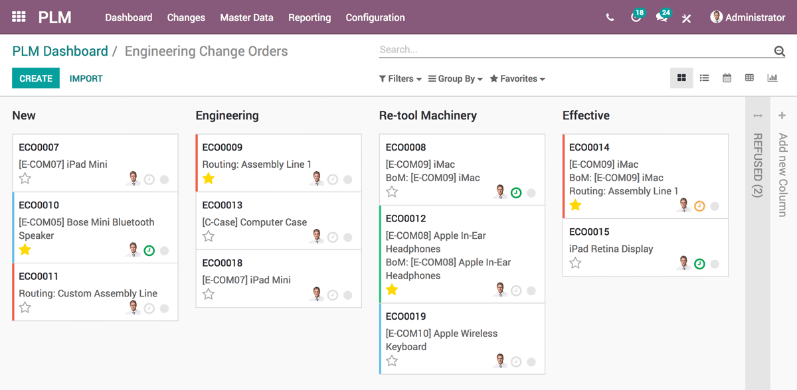
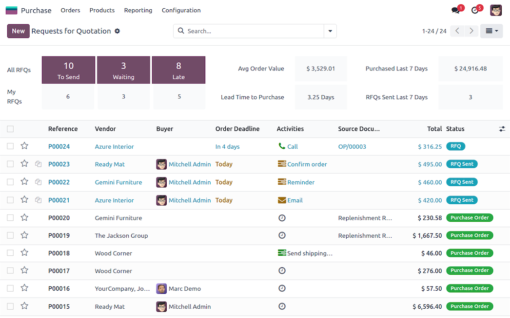
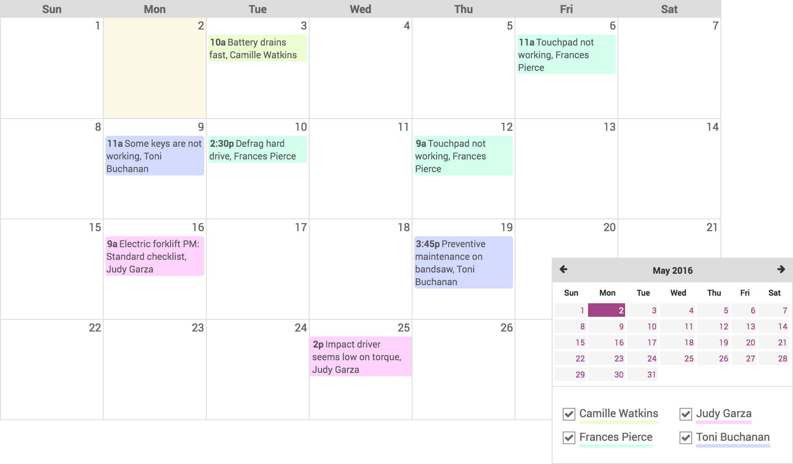
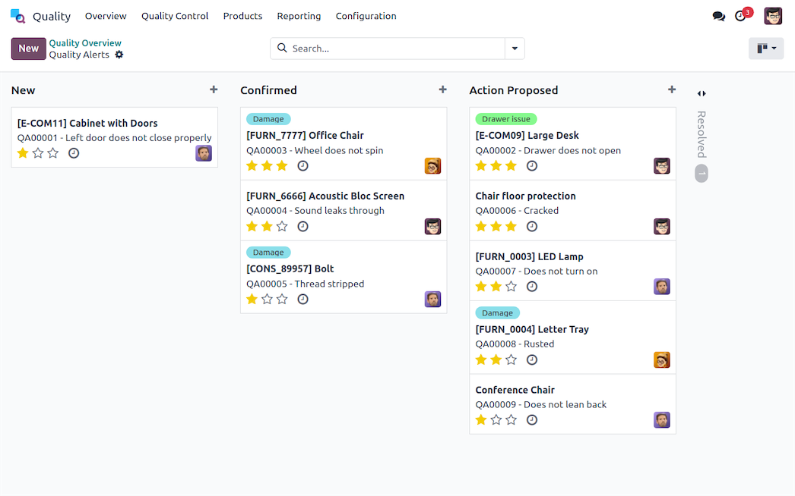

La production avec Odoo
Inventaire
Gérez efficacement vos stocks en temps réel avec une traçabilité complète et des prévisions précises...

Fabrication
Planifiez et suivez votre production avec des ordres de fabrication intelligents et une gestion optimisée des ressources...

PLM
Gérez le cycle de vie complet de vos produits, de la conception à la production...

Achats
Optimisez vos approvisionnements et gérez vos relations fournisseurs efficacement...

Maintenance
Planifiez et suivez la maintenance préventive et corrective de vos équipements...

Qualité
Assurez la qualité de vos produits avec des contrôles rigoureux et une traçabilité complète...
